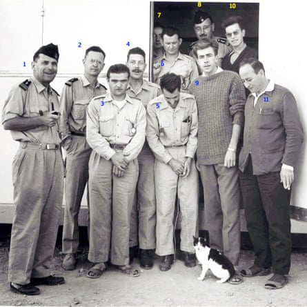
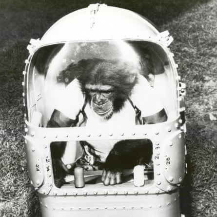
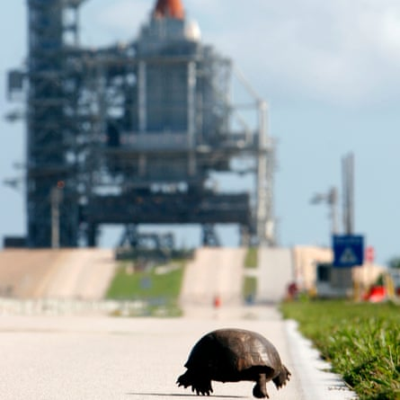
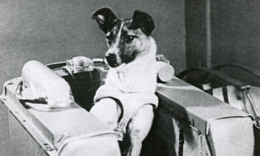

In a few weeks, space scientists will celebrate a remarkable event – the 60th anniversary of the launch of the first cat into space, an astronautical feat that has never been repeated.
A small black-and-white Parisian stray, Félicette, flew on a French rocket on a sub-orbital mission in October 1963 that reached an altitude of 154km, taking her to a place where no feline had gone before – or since.
In the early 60s, dogs and monkeys were the animals usually used by scientists to find out exactly how dangerous conditions were in outer space and to assess if humans could survive trips beyond the edge of Earth’s atmosphere. Russia preferred dogs, the US generally chose monkeys.
But France decided to be different. A total of 14 stray cats were gathered by staff at France’s space agency Cerma – Centre d’Enseignement et de Recherches de Médecine Aéronautique – for selection as feline astronauts, though the cats were deliberately not given names in order to prevent scientists from becoming too fond of them. The cat selected to travel to space was simply known as C341.
Then, after news was announced of its flight on a Veronique rocket on 18 October 1963 and subsequent safe return to Earth, the French press decided this feline trailblazer had to have a name. They picked Felix after the cartoon cat character, only to discover that C341 was female. Her name was adjusted to Félicette, as a result.
Félicette, pictured with the French space team after her return to earth.Photograph: Matthew Guy
In putting Félicette in one of its rockets, France added a new species to the list of creatures that scientists had already hurled into space, a roll-call that has since been swelled over subsequent decades by the addition of some very unlikely animal astronauts.
Tortoises have been put in orbit round the moon; thousands of jellyfish were once flown on a space shuttle; and in 1973, two garden spiders, Anita and Arabella, were taken to the Skylab orbiting laboratory to see if they could spin webs in microgravity. (They could but the webs were unevenly shaped, scientists found.)
“In the 60s, scientists and engineers were primarily concerned about how dangerous it might be for a human to be in a capsule in outer space, and most animal space flights were undertaken to see if they suffered or their lives were threatened by the weightlessness or increased radiation or other effects they might experience up there,” said astronomer Jake Foster at the Royal Observatory Greenwich.
“The fact that they did not succumb paved the way for humans to begin journeys into space.”
In fact, the blasting of animals into space has a surprisingly long pedigree, going back to the late 1940s when US scientists selected a very humble lifeform to be the first creatures to soar beyond our atmosphere. They chose fruit flies.
A payload of Drosophila melanogaster was loaded into a V-2 rocket, recovered from Nazi Germany’s missile programme, and fired to a height of 109km. The capsule was then parachuted back down to New Mexico and the flies were studied to assess how they had been affected by cosmic radiation.
This flight was followed in the US by a series of other sub-orbital missions that carried monkeys above the atmosphere before their craft arced back to Earth.
Many died in the process, either of suffocation or when their capsule suffered parachute failure.
However, it was the Soviet dog Laika who made world headlines for her sacrificial role as an animal astronaut. A stray mongrel picked from the streets of Moscow, she flew aboard Sputnik 2 on 3 November 1957. This was only the second satellite ever put into orbit round Earth, and the Soviet Union decided to maximise its headline potential by using it to carry a living creature.
Laika died of overheating on the craft’s fourth orbit. No one had expected her to live. The technology for de-orbiting spacecraft had not yet been developed and she was destined to die in space.
Ham, the first chimpanzee in space, prepares for his first flight in Mercury Redstone-2 (Mr-2), part of Nasa’s Mercury programme in the 1960s.Photograph: Encyclopaedia Britannica/Universal Images Group/Getty Images
At the time, most media coverage of her journey focused on its implications for the US-Soviet space race and the cold war. Nevertheless, there was criticism of the mission, with the UK National Canine Defence League calling on all dog owners to observe a minute’s silence on each day that Laika remained in space.
Later missions were designed to bring animals safely back to Earth after their flights. Some were successful, some not. In July 1960, dogs Lisichka and Bars died when their Soviet launcher exploded shortly after lift-off.
However, this mission was followed by the successful launch and safe retrieval of a capsule carrying dogs Belka and Strelka later that year. According to Animals in Space by Colin Burgess and Chris Dubbs, the Soviet Union launched dogs on rockets 71 times between 1951 and 1966, with 17 deaths.
Today, rules governing the use of animals in space experiments are much stricter, added Foster. “Animals are also being put into orbit for different reasons. Modern missions are less concerned about testing the dangers of space and focus more on researching the long-term effects of living in space. That, in turn, reflects an interest in developing long-term missions such as trips to Mars.”
In addition, scientists study various lifeforms in orbit – mainly on the International Space Station – to unravel the influence that gravity has on living organisms on Earth. In orbit, gravity’s pull is very much lighter than on Earth, and this can shed light on how the growth of animals and plants proceeds.
A tortoise inches closer to the space shuttle Discovery at the Kennedy Space Center in 2006.Photograph: Rick Wilking/REUTERS
“Plants develop differently in microgravity,” said Nasa scientist Jennifer Buchli. “They don’t know which way is down any more. They no longer have a gravity signal for their root structure. So we examine their RNA to see how it’s giving directions and signals, and how that differs from the way plants behave on Earth.”
Another ISS project, highlighted by Foster, involved mice that spent 90 days there as part of a study to see how sleep schedules and guts respond to being in space for so long. “They had mice up in space and a control group on Earth to compare results.”
Perhaps the most astonishing act of space survival was demonstrated by the water bear, or tardigrade, a microscopic invertebrate that can tolerate the hottest and coldest environments on Earth, and can survive decades without water.
In an intriguingly titled experiment called Tardis (Tardigrades in Space), a European research team sent 3,000 of these little creatures into orbit, where they spent 12 days on the outside of a rocket. Remarkably, 68% of them survived the cold, zero gravity, vacuum and radiation. “The water bears are something new. Nobody knew about that capability,” said René Demets, a European Space Agency project biologist.
Rocketman’s best friend … Laika became the first canine in space when she flew aboard Sputnik 2 on 3 November 1957.Photograph: Science History Images/Alamy
Being flown into space is no longer a death sentence, scientists insist. Félicette was not so lucky, however. She lived through her flight and survived her return to Earth with her cone-shaped capsule landing in a position that left her hanging upside down with her bottom sticking up in the air until she was retrieved.
Worse was to follow. Two months after her trip into space, Félicette was put down so that scientists could study her body to determine if she had suffered any anatomical or physiological damage. They later concluded that they had learned nothing of any use from the autopsy. No more cats were put into space, and France never launched its own astronauts.
However, Félicette is still remembered. A statue of her, sitting on a globe gazing upwards, was erected at the International Space University at Strasbourg in 2019.